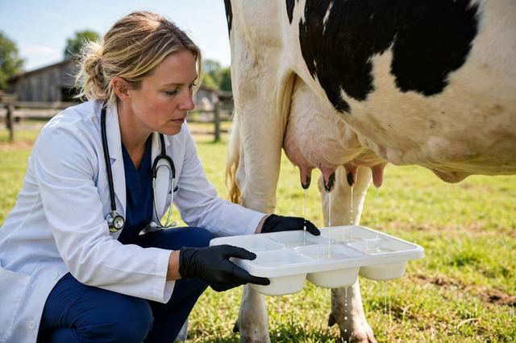
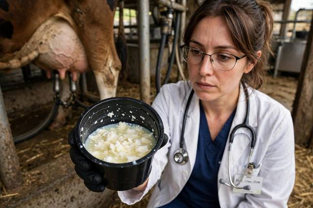

Subclinical mastitis is inflammation of the udder without visible changes in milk or udder appearance. It can silently increase somatic cell count, reduce milk production and spread contagious pathogens within a herd.
This guide covers clinical signs, causes, diagnosis, treatment principles and prevention.
Clinical Signs
1
Elevated somatic cell count(High cell count in the milk)
2
Positive California Mastitis Test(A positive test result shows hidden udder infection)
3
Reduced milk yield(Milk production drops without visible signs)
4
Repeated high bulk-tank cell counts(High cell counts in the bulk tank over time)

Elevated somatic cell count

Positive California Mastitis TestReduced milk yieldHigh bulk-tank cell counts
Causes and Transmission
Causes include contagious and environmental udder pathogens. Milking routine, teat-end condition, bedding hygiene, equipment function and herd infection pressure influence risk.
Pathogenesis
In subclinical mastitis, bacteria colonise the teat canal and udder tissue at a low level without causing visible swelling or abnormal milk. The immune system keeps the infection in check but cannot clear it, so white blood cells continue to enter the milk, keeping the somatic cell count raised.
Chronic low-grade inflammation gradually damages milk-producing tissue, quietly reducing milk yield and quality over weeks or months. The infection can flare into clinical mastitis at times of stress, and infected cows silently spread bacteria to herd mates at milking.
Veterinary Diagnosis
Screening may use CMT and somatic cell count. Milk culture helps identify pathogens and distinguish contagious from environmental patterns. Interpret results alongside quarter and herd records.
Differential Diagnosis
Several conditions can look similar. A veterinarian distinguishes them by the signs, history and laboratory findings:
Clinical mastitis — shows visible udder swelling and abnormal milk with clots or flakes.
Physiological high cell count — occurs around drying off and very early lactation without bacteria on culture.
Teat-end damage — can raise the cell count and predisposes the quarter to infection.
Poor milking technique — can raise the cell count without any infection being present.
Treatment and Case Management
Do not automatically treat every subclinical case with antibiotics. A veterinarian uses culture results, lactation stage, expected cure, cow history and local guidelines to decide whether treatment, segregation or dry-period management is appropriate.
When to seek urgent help: Repeated high cell counts or spread within a herd should prompt a structured udder-health investigation.
Recommended Medicines
1
Antibiotic – Intramammary antibiotic(Only if the veterinarian decides treatment is needed)As prescribed by a veterinarian
2
Antibiotic – Dry-period intramammary antibiotic(Treatment at drying off, only if the veterinarian advises)As prescribed by a veterinarian
⚠ Important Tips:
Do not automatically treat every subclinical case with antibiotics.
Use antibiotics only under veterinary advice — the vet decides from culture results and cow history.
Dry-period management and segregation may be better than treatment in some cows.
Repeated high cell counts across the herd need a structured udder-health investigation.
Intramammary tubes — vet-prescribed onlyInjection — vet-administered only
Prevention and Herd Management
Maintain milking hygiene, post-milking teat disinfection, equipment maintenance, clean bedding, regular SCC monitoring and a veterinarian-designed dry-cow strategy.
Frequently Asked Questions
What is subclinical mastitis in dairy cows?
Subclinical mastitis is inflammation of the udder without visible changes in milk or udder appearance. It can silently increase somatic cell count, reduce milk production and spread contagious pathogens within a herd.
What are the signs of subclinical mastitis?
There may be no visible signs. Indicators include an elevated somatic cell count, a positive California Mastitis Test, reduced yield or repeated high bulk-tank cell counts.
How is subclinical mastitis diagnosed?
Screening may use CMT and somatic cell count. Milk culture helps identify pathogens and distinguish contagious from environmental patterns. Results should be interpreted alongside quarter and herd records.
Should subclinical mastitis always be treated with antibiotics?
No. Do not automatically treat every subclinical case with antibiotics. A veterinarian uses culture results, lactation stage, expected cure, cow history and local guidelines to decide whether treatment, segregation or dry-period management is appropriate.
How can subclinical mastitis be prevented?
Maintain milking hygiene, post-milking teat disinfection, equipment maintenance and clean bedding, with regular SCC monitoring and a veterinarian-designed dry-cow strategy.
What is CMT test for mastitis?
The California Mastitis Test (CMT) is a screening test that helps detect subclinical inflammation of the udder. It is used alongside somatic cell count, and milk culture helps identify the pathogens involved.
Why is my cow somatic cell count high?
A high somatic cell count can indicate subclinical mastitis, an udder inflammation without visible changes in milk or udder appearance. Repeated high counts or spread within a herd should prompt a structured udder-health investigation by a veterinarian.
گائے کے دودھ میں سیل کاؤنٹ زیادہ کیوں ہوتا ہے؟
زیادہ سوماٹک سیل کاؤنٹ تھنوں کی چھپی ہوئی سوزش کی نشانی ہو سکتی ہے، جس میں دودھ بظاہر نارمل لگتا ہے۔ سی ایم ٹی ٹیسٹ اور دودھ کا کلچر تشخیص میں مدد کرتے ہیں۔ ہر کیس میں اینٹی بایوٹک ضروری نہیں، فیصلہ ویٹرنری ڈاکٹر کرتا ہے۔
Key Takeaway
Early recognition, accurate diagnosis, responsible veterinary care and herd-level prevention are central to managing this condition. Follow current local veterinary authority guidance and medicine labels.
Radostits, O.M., Gay, C.C., Hinchcliff, K.W., Constable, P.D. Veterinary Medicine: A Textbook of the Diseases of Cattle, Horses, Sheep, Pigs and Goats.
FAO animal health manuals. Food and Agriculture Organization of the United Nations.
✍️ Written by Dr. Shahid Bilal Depal, DVM (PVMC RVMP #15068)
This guide is for educational purposes. Consult a registered veterinarian for diagnosis and treatment.